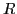

Preprocessor options can be applied in any order, as desired, and repeated
by specifying the order and repetitions on the command line in the preprocessor sequence. A preprocessor sequence consists of a list of preprocessor runs, or just runs. Each run may be followed by a
positive integer or another run. A run is a concatenation of preprocessor
options from the above table, wrapped inside matching curly braces. The
preprocessing operations specified by the options of a run are applied in
the order in which they are specified. The run may be repeated if it is
immediately followed by a positive integer . In that case the run is
repeated times or until the internal form is the same before and after
the run (that is, until reaching a fixed point). If the run is not followed
by a number then it will repeat until reaching a fixed point. For
example, the following is a run which applies existential quantification,
followed by dependent variable clustering:
{ExDc}
The following is a preprocessor sequence with three runs, the first
repeated at most 3 times, the second at most 2 times and the third at
most 10 times:
{ExDc}3{ExSt}2{ExPr}10
Nesting of runs is allowed as in
{{StDc{Pr{ExDc}3}{Ex}10}Ex}
There may be times when a preprocessor run should be run the maximum number
of times specified, instead of stopping early once reaching a fixed point.
There may also be times when only certain functions of a preprocessing run
should be considered when determining a stopping condition. All of this can
be controlled by bounding preprocessor runs, or options, inside of square
brackets. A set of square brackets should be followed by either 0 or 1 where
a 0 forces the internal form to be recognized as not altered, and a 1 forces
the internal form to be recognized as altered. For example:
{[ExDc]1}10
This sequence will causes the preprocessing run to loop 10 times even if the
internal form reachs a fixed point prior to 10 iterations. This happens
because the square brackets force sbsat to consider the internal form as
having been modified, even though it may not have been.
{Ex[St]0Dc}
This sequence causes the preprocessing run to loop only when either `Ex' or
`Dc' modify the internal form. `St' may modify the internal form, but the
looping process ignores this information.